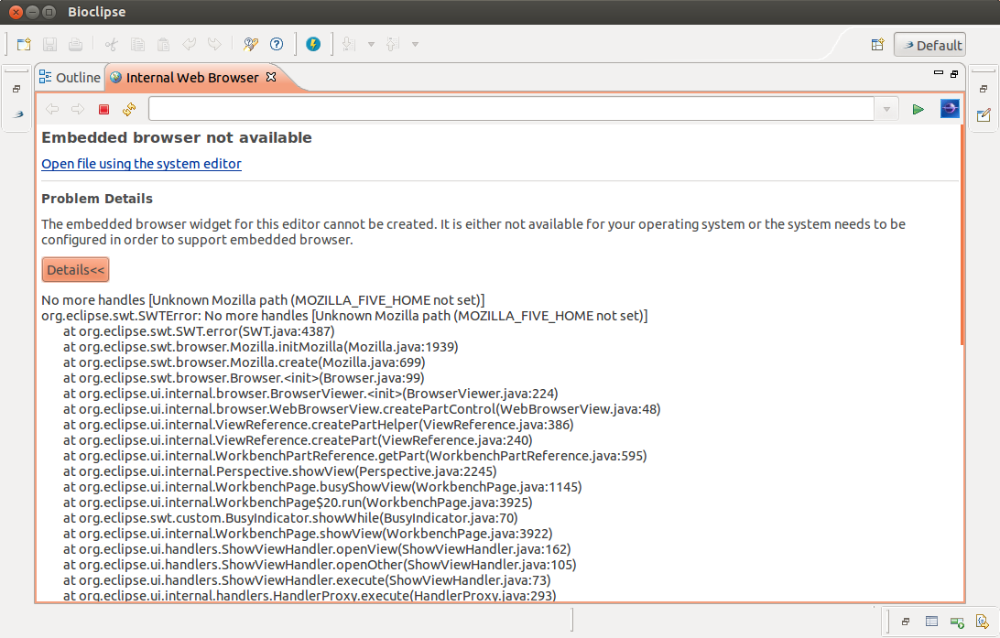

In certain Linux distributions (Ubuntu 12.04, for example) the Bioclipse internal Web browser fails to start properly due to missing SWT GTK+ WebKit JNI library:

Particularly, in Ubuntu the problem is solved by installing the library:
apt-get instlall libswt-webkit-gtk-3-jniFor more information and instructions, take a look at the SWT FAQ pages: